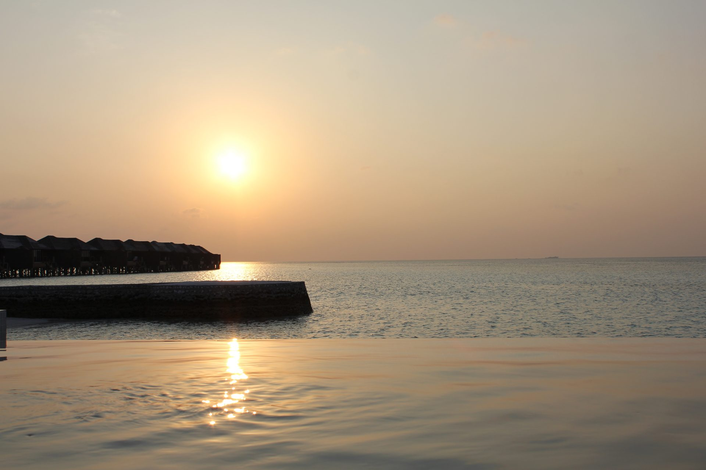

Kendhoo is a working local island, not a resort — getting there takes a little more planning, and is part of the experience.
Every route starts at Velana International Airport (Malé). Your guesthouse can usually help coordinate the final leg once you've booked.
Fly roughly 25 minutes from Malé to Dharavandhoo Airport (several flights daily), then take a speedboat of about 40 minutes on to Kendhoo. The most convenient option if your schedule is tight, and easiest for early arrivals or late departures.
A more affordable, slower option: speedboat transfers run on a daily schedule, taking roughly 2.5–4 hours depending on conditions and route. Departure times are fixed, so confirm the day's schedule with your guesthouse before booking flights.
A public inter-island ferry connects Malé to Kendhoo a couple of times a week, taking around 7 hours at a fraction of the speedboat cost — a slow, scenic way to travel between atolls. Schedules change, so check current timings locally before relying on it.
Exact prices and schedules vary by season and operator — your guesthouse will confirm current options and can often arrange the whole transfer for you once your stay is booked.
As an inhabited local island, Kendhoo's accommodation is entirely small, family-run guesthouses rather than resorts — book directly and you're supporting the island's own households.
A family-run guesthouse in the heart of Kendhoo, steps from the Magaamfulhu and the harbour. Dhoani arranges airport transfers, excursions (see the full list on the Things to Do page), and day trips to nearby resorts and Hanifaru Bay.
A sister property to Dhoani Maldives, offering a boutique experience with modern amenities and personalized service. Perfect for travelers seeking a refined stay while experiencing the authentic local life of Kendhoo.
Named after the nearby Fasdūtherē island chain, this cozy inn is popular with divers and those looking to explore the Baa Atoll UNESCO Biosphere Reserve. It provides a warm, authentic Maldivian hospitality experience.
A charming guesthouse providing a quiet retreat on the island. It offers easy access to Kendhoo's beaches and is an ideal base for independent travelers looking for comfort and value.
One of Kendhoo's newer additions, Blue Cave offers comfortable rooms and a friendly atmosphere. A great choice for visitors wanting to enjoy the natural beauty of the Baa Atoll in a peaceful setting.
Kendhoo has a growing number of family-run guesthouses. If you can't find availability, ask any local host — they're usually happy to point you to a neighbour with a room.
Kendhoo is a conservative, devout Muslim community first, and a destination second. A little awareness goes a long way.
5°16′34″N, 73°00′40″E — about 133 km northwest of Malé, in the southern Maalhosmadulu natural atoll, within Baa Atoll's UNESCO Biosphere Reserve.
Questions about this guide? Reach us at hello@visitkendhoo.com. For bookings, please contact a Kendhoo guesthouse directly.
Open in Google Maps ↗